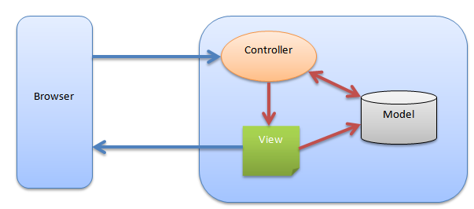

- 1. რა არის CodeIgniter ?
-
CodeIgniter - ეს არის აპლიკაციების შესაქმნელი პლატფორმა, ფრეიმვორკი - ინსტრუმენტთა ნაკრები იმ პროგრამისტებისათვის, რომლებიც PHP-ის
მეშვეობით ამზადებენ ვებ-გვერდებს. ფრეიმვორკის დახმარებით გაცილებით სწრაფად და მარტივად ვქმნით აპლიკაციებს და აღარ გვიწევს კოდის წერის
დაწყება ნოლიდან. CI მოიცავს ბიბლიოთეკების მრავალფეროვან ნაკრებს და მარტივ ინტერფეისს, აგრეთვე მარტივ ლოგიკურ სტრუქტურას ამ
ბიბლიოთეკებთან წვდომისათვის. CI არის MVC პრინციპზე დაფუძნებული ფრეიმვორკი.
მახასიათებლები
-
CodeIgniter გამოირჩევა სიმარტივით, სიმარტივეს კი განაპირობებს შემდეგი ფაქტორები
- ხელმისაწვდომია ხარისხიანი და სრული დოკუმენტაცია რომელშიც მოყვანილია მაგალითები.
- არსებობს უამრავი ვიდეო-გაკვეთილი, როგორც ოფიციალურ საიტზე, ასევე ზოგადად ინტერნეტ-სივრცეში.
- ფრეიმვორკი პროგრამისტს აძლევს მოქმედების თავისუფლებას, რაიმე სახის სტრუქტურული შეზღუდვებისა და კონვენციების შექმნის გარეშე.
- CodeIgniter მუშაობს თითქმის ყველა ჰოსტინგ-პროვაიდერთან, რომელსაც აქვს PHP 5.1 და უფრო ახალი ვერსიების მხარდაჭერა.
- CodeIgniter ითვლება ერთ-ერთ ყველაზე სწრაფ ფრეიმვორკად.
შესაძლებლობები
- MySQL, PostgreSQL, MSSQL, SQLite, Oracle მონაცემთა ბაზების მხარდაჭერა.
- როგორც ჩვეულებრივი (მაგ: /index.php?cat=10&subcat=2&id=41 ) ასევე ადამიანისათვის გასაგები (რუს: ЧПУ - человекопонятный URL, ინგლ: friendly URL, მაგ: /product/phone/Samsung/) URL მისამართების მხარდაჭერა.
- ფრეიმვორკი შეიცავს ისეთ ბიბლიოთეკებს, რომლების გამოიყენება ფაილებთან სამუშაოდ, ელ_ფოსტის გასაგზავნად, ფორმების ვალიდაციისათვის, სესიების მხარდასაჭერად, გამოსახულებებთან სამუშაოდ და ა.შ
ინსტალაცია
CI-ს ინსტალაცია საკმაოდ მარტივია- გადმოვწეროთ CI შემდეგი მისამართიდან : CodeIgniter
- გავხსნათ დაარქივებული ფაილი.
- ავტვირთოთ არქივში არსებული ყველა ფაილი სერვერზე
- ატვირთვის შემდეგ გავხსნათ ჩვენი სერვერის URL მისამართი, მაგ: http://localhost/codeigniter

CodeIgniter - აპლიკაციის არქიტექტურა

- როგორც ვხედავთ, როგორც კი CI მიიღებს რაიმე მოთხოვნას, მოთხოვნა მიემართება index.php გვერდისკენ.
- მეორე ბიჯზე Routing ანუ მარშრუტიზატორი წყვეტს საით გაგზავნოს მოთხოვნა ბიჯი-3-სკენ თუ ბიჯი-4-სკენ უსაფრთხოების გადასამოწმებლად.
- თუ მოთხოვნა უკვე მოხვედრილია კეშირების პროცესში, მაშინ მარშრუტიზატორი მოთხოვნას გაგზავნის ბიჯი-3-სკენ და პასუხი დაუბრუნდება მომხმარებელს.
- თუ მოთხოვნა არ არის დამუშავებული, მაშინ მარშრუტიზატორი მას გაგზავნის ბიჯი-4-სკენ უსაფრთხოების გადასამოწმებლად.
- მანამ მოთხოვნა გადაეცემა ძირითად კონტროლერს ანუ Application Controller-ს, გამოგზავნილ მოთხოვნაში შემავალი ინფორმაცია უკვე გადამოწმებულია უსაფრთხოების თვალსაზრისით, ძირითადი კონტროლერი ანუ Application Controller მოითხოვს ყველა აუცილებელ მოდელს, ბიბლიოთეკას, დამხმარეს, პლაგინს სკრიპტს და გადასცემს მათ წარმოდგენას ანუ View-ს.
- წარმოდგენა ანუ View შექმნის საჭირო ინფორმაციის შემცველ გვერდს და ჩართავს მას კეშირების პროცესში, შემდეგ დაბრუნდება საბოლოო შედეგი და გვერდი მზად იქნება ახალი მოთხოვნის მისაღებად
CodeIgniter - დირექტორიების სტრუქტურა
ქვემოთ მოყვანილ სურათზე ასახულია CI დირექტორიების სტრუქტურა

CI დირექტორიების სტრუქტურა იყოფა სამ საქაღალდედ- Application
- System
- User_guide
Application
დასახელებიდანაც ჩანს, რომ ეს საქაღალდე შეიცავს ჩვენი აპლიკაციის მთლიან კოდს, ესაა საქაღალდე სადაც ვქმნით პროექტს, საქაღალდე შეიცავს შემდეგ ქვე-საქაღალდეებს- Cache − ეს საქაღალდე შეიცავს ჩვენი პროექტის ყველა კეშირებულ გვერდს, კეშირებული გვერდების მეშვეობით აპლიკაცია ხდება უფრო სწრაფი.
- Config − ეს საქაღალდე შეიცავს კონფიგურაციულ ფაილებს, config.php ფაილში პროგრამისტს შეიძლია განსაზღვროს სხვადასხვა კონფიგურაციული პარამეტრები. database.php ფაილში კი შესაძლებელია მონაცემთა ბაზის პარამეტრების მითიტება.
- Controllers − ეს საქაღალდე შეიცავს აპლიკაციის კონტროლერებს, ეს არის აპლიკაციის ძირითადი ნაწილი.
- Core − ეს საქაღალდე შეიცავს აპლიკაციის ძირითად კლასს.
- Helpers − ამ საქაღალდეში შეიძლება მოთავსდეს აპლიკაციის დამხმარე კლასები.
- Hooks − ამ საქაღალდეში განთავსებული ფაილები საშუალებას გვაძლევენ სხვაგვარად დავგეგმოთ ფრეიმვორკში მიმდინარე შიდა სამუშაოები ძირითადი ფაილების შეუცვლელად.
- Language − ეს საქაღალდე შეიცავს ენასთან დაკავშირებულ ფაილებს.
- Libraries − ეს საქაღალდე შეიცავს აპლიკაციისათვის შექმნილი ბიბლიოთეკების ფაილებს.
- Logs − ეს საქაღალდე შეიცავს სისტემის მუშობის ამსახველ ფაილებს.
- Models − აქ განთავსდება მონაცემთა ბაზასთან დაკავშირებული ფაილები.
- Third_party − ამ საქაღალდეში შეიძლება მოვათავსოთ აპლიკაციისათვის საჭირო სხვადასხვა პლაგინები.
- Views − აქ მოთავსდება აპლიკაციის HTML ფაილები.
System
ეს საქაღალდე შეიცავს CI-ს ძირითად კოდებს, ბიბლიოთეკებს, დამხმარეებს და სხვა ფაილებს, რომლებიც გვეხმარებიან კოდის წერა გავხადოთ უფრო ადვილი.- Core − ეს საქაღალდე შეიცავს CI-ს ძირითად კლასს. არავითარ შემთხვევაში არ შეიძლება ამ საქაღალდეში რაიმეს შეცვლა ჩვენთვის საჭირო ფაილები მოთავსებულია application საქაღალდეში.
- Database − საქაღალდე შეიცავს მონაცემთა ბაზის ძირითად დრაივერსა და მის სხვა ხელსაწყოებს.
- Fonts − საქაღალდე შეიცავს ფონტებთან დაკავშირებულ ინფორმაციებს.
- Helpers − საქაღალდე შეიჩავს სტანდარტულ CI დამხმარეებს (თარიღი, cookie და URL დამხმარეები).
- Language − საქაღალდე შეიცავს ენასთან დაკავშირებულ ფაილებს.
- Libraries − საქაღალდე შეიჩავს სტანდარტულ CI ბიბლიოთეკებს (ელ_ფოსტა, კალენდარი, ფაილების ატვირთვა და ა.შ ). შეგვიძლია შევქმნათ საკუთარი ბიბლკიოთეკებიც, მაგრამ ისინი უნდა შევინახოთ application/libraries საქაღალდეში რათა განვაცალკევოთ CI სტანდარტული ბიბლიოთეკებისაგან.
User_guide
ეს არის ჩვენი გიდი CI-ში, მისი მეშვეობით შეგვიძლია შევისწავლოთ სხვბადასხვა ბიბლიოთეკების ფუნქციები, დამხმარეები და კლასები. ჩვენი პირველი CI აპლიკაციის შექმნამდე რეკომენდებულია გავეცნოთ CI გიდს.
გარდა ზემოთ ჩამოთვლილი საქაღალდეებისა ძირ დირექტორიაში არის ერთი მნიშვნელოვანი ფაილი index.php, აქ შეგვიძლია განვსაზღროთ ან შევცვალოთ აპლიკაციის სამუშაო გარემო და შეცდომათა გამოტანის სისტემა, აგრეთვე სისტემისა და აპლიკაციის საქაღალდეთა სახელები. რეკომენდებულია არ შევცვალოთ ამ საქაღალდეში განსაზღვრული პარამეტრები თუ ზუსტად არ ვიცით რას ვაკეთებთ. -
CodeIgniter გამოირჩევა სიმარტივით, სიმარტივეს კი განაპირობებს შემდეგი ფაქტორები
- 2. რა არის MVC ?
-
MVC (Model–View–Controller ანუ მოდელი-წარმოდგენა-კონტროლერი) - არის კომპიუტერულ ინჟინერიაში გავრცელებული, კოდირების
შაბლონი, მეთოდი, იდეა, რომელიც საშუალებას იძლევა განცალკევდეს ვებ-აპლიკაციის ლოგიკა და მისი წარმოდგენა ანუ ის ნაწილი
რომელსაც მომხმარებელი ხედავს ბრაუზერში.

ეს განცალკევება აპლიკაციას ხდის უფრო მოქნილს და ადვილად კორექტირებადს რადგან თუ გვსურს ვიზუალური მხარის ჩასწორება საქმე გვაქვს მხოლოდ მასთან და არა ლოგიკურ ფუნქციონალიტეტთან და პირიქით.წარმოდგენა
MVC-ს ელემენტს - წარმოდგენა (view), ინფორმაცია გამოაქვს ეკრანზე. ეს არის აპლიკაციის დიზაინერული ნაწილი მინიმალური ლოგიკით. წარმოდგენა შეიძლება შედგებოდეს რამოდენიმე შაბლონისაგან.
კონტროლერი
MVC-ს ელემენტი - კონტროლერი არის მომხმარებლისა და აპლიკაციის წარმოდგენის დამაკავშირებელი ბლოკი. იგი იღებს ინფორმაციას მომხმარებლისაგან, ამუშავებს, ამოწმებს მას და ეს დამუშავებული ინფორმაცია ეგზავნება MVC-ს მესამე ელემენტს - მოდელს, მისგან ღებულობს შესაბამის პასუხს და წყვეტს თუ წარმოდგენის რომელმა შაბლონმა უნდა დაუბრუნოს ეს პასუხი მომხმარებელს.
მოდელი
MVC-ს მესამე ელემენტი - მოდელი, ეს არის ლოგიკის ძირითადი ნაწილი, რომელიც მუშაობს მონაცემებთან, ახდენს მონაცემებით მანიპულირებას. მოდელი იღებს კონტროლერისაგან რაიმე მოთხოვნას, შემდეგ მბ-დან მოაქვს შესაბამისი ინფორმაცია და უბრუნებს კონტროლერს. სხვა სიტყვებით, რომ ვთქვათ მოდელის ფუნციაა მიიღოს მონაცემი, დაამუშავოს იგი და დააბრუნოს პასუხი. პრაქტიკაში მოდელის რეალიზება ხშირად ხდება ხოლმე კლასის სახით, რომელსაც აქვს მონაცეთა დამუშავებისათვის განსაზღვრული მეთოდები.
მუშაობის კლასიკური სქემა
მომხმარებელმა გააკეთა მოთხოვნა საიტზე, მოთხოვნა გადაეცა საიტზე შესვლის ერთადერთ წერტილს (index.php, frontController), ამ წერტილში მოსულ მოთხოვნას ამუშავებს მარშრუტიზაციის კომპონენტი (Router), ერთგვარი გზამკვლევი მოთხოვნისათვის, როუტერმა უნდა განსაზღვროს თუ რომელმა კონტროლერმა უნდა დაამუშავოს მოთხოვნა
ვთქვათ ეს კონტროლერია NewsController, ეს კონტროლერი მოთხოვნიდან ღებულობს ინფორმაციას თუ რა სახის სიახლეების ნახვა უნდა მომხმარებელს, შემდეგ მიმართავს მოდელს საჭირო ინფორმაციის მისაღებად, პასუხის მიღების შემდეგ კონტროლერი იყენებს საჭირო წარმოდგენას პასუხის ბრაუზერში გამოსატანად, ასე იკვრება მთლიანი წრე. - 3. CI - URL მისამართები
-
ნაგულისხმეობის პრინციპით CI-ში განსაზღვრულია საძიებო სისტემებისა და ადამიანის თვალისათვის ადვილად აღქმადი URL მისამართები. სტანდარტული
URL მისამართების ჩაწერის სტანდარტული "მოთხოვნის ტექსტი" (მაგ: example.com?page=view&content=1...) ტიპის ნაცვლად CI იყენებს სეგმენტურ მიდგომას
example.com/news/article/my_articleURL მისამართის სეგმენტები
საბაზისო URL მისამართს აქვს შემდეგი სახეexample.com/class/function/IDURL მისამართის სეგმენტები, Model-View-Controller პრინციპის მიხედვით განსაზღვრავენ:- პირველი სეგმენტი განსაზღვრავს კონტროლერის კლასს რომლის გამოძახებაც უნდა მოხდეს.
- მეორე სეგმენტი განსაზღვრავს კლასის მეთოდს რომელიც უნდა შესრულდეს
- მესამე და შემდეგი სეგმენტები განსაზღვრავენ ID-ს და სხვა ცვლადებს, რომლებიც უნდა გადაეცეს კონტროლერს.
URL მისამართიდან index.php ტექსტის წაშლა
ნაგულისმეობის პრინციპით URL მისამართებში შეტანილია index.php დასახელებაexample.com/index.php/news/article/my_articleURL-დან მისი წაშლა შესაძლებელია .htaccess ფაილის მეშვეობითRewriteEngine Onმოყვანილ მაგალითში ნებისმიერი HTTP მოთხოვნა, რომელიც განსხვავდება არსებული დირექტორიების ან ფაილების მოთხოვნისაგან, აღიქმნება index.php ფაილის მოთხოვნად.
RewriteCond %{REQUEST_FILENAME} !-f
RewriteCond %{REQUEST_FILENAME} !-d
RewriteRule ^(.*)$ index.php/$1 [L].htaccess ფაილში განსაზღვრულმა წესებმა შეიძლება არ იმუშავოს ყველანაირი სერვერული კონფიგურაციისათვის.
"მოთხოვნის სტრიქონი" ტიპის URL მისამართები
შეიძლება მოხდეს რომ დაგვჭირდეს არა სეგმენტური URL მისამართები, არამედ შემდეგი სახისindex.php?c=products&m=view&id=345თუ გავხსნით application/config.php ფაილს დავინახავთ შემდეგ ჩანაწერებს$config['enable_query_strings'] = FALSE;თუ $config მასივის 'enable_query_strings' გასაღების მნიშვნელობად მივუთითებთ TRUE-ს, მაშინ შესძლებელი იქნება გავხსნათ შემდეგი ტიპის URL მისამართები
$config['controller_trigger'] = 'c';
$config['function_trigger'] = 'm';index.php?c=controller&m=method - 4. CI - კონტროლერები
-
კონტროლერი - ეს არის უბრალო ფაილი სადაც აღწერილია კლასი. როგორც მისი დასახელებიდან ჩანს, იგი მართავს მთლიან აპლიკაციას URI
მისამართების დახმარებით. განვიხილოთ URL მისამართი
example.com/index.php/blog/ამ მისამართზე შესვლისას CI შეეცდება მოძებნოს კონტროლერი Blog.php და ჩატვირთოს იგი. როდესაც კონტროლერის დასახელება დაემთხვევა URI-ის პირველ სეგმენტს, მოხდება ამ კონტროლერის ჩატვირთვა.კონტროლერის შექმნა
შევიდეთ application/controllers საქაღალდეში. აქ დაგვხვდება ორი ფაილი index.html და Welcome.php, ეს ფაილები მოყვება CI-ს. გავაკეთოთ ახალი ფაილი "Blog.php” და ჩავწეროთ შემდეგი კოდი<?php class Blog extends CI_Controller{ public function index(){ echo "Hello Georgia"; } } ?>კონტროლერის გამოძახება
ამ კონტროლერის გამოძახება შესაძლებელია თუ შევალთ შემდეგ მისამართზეhttp://www.your-domain.com/index.php/blogბრაუზერში უნდა გამოჩნდეს ტექსტი "Hello Georgia" ; )კონტროლერის მეთოდები
განვაახლოთ ზემოთ აღწერილი კლასი და დავამატოთ მას მეთოდი “framework”<?php class Blog extends CI_Controller { public function index(){ echo "Hello Georgia"; } public function framework() { echo "This is CodeIgniter !"; } } ?>- http://www.your-domain.com/index.php/blog
- http://www.your-domain.com/index.php/blog/index
- http://www.your-domain.com/index.php/blog/framework
მარტივი ასახსნელია რომ მეორე შემთხვევაშიც იგივე შედეგს ვიხილავთ ბრაუზერში. რაც შეეხება მესამე URL-ს, მასზე შესვლის შემდეგ ბრაუზერში გამოვა ტექსტი "This is CodeIgniter !" , ეს კი არის framework მეთოდის შედეგი, რადგან კონტროლერის დასახელების შემდეგ სწორედ ამ მეთოდის სახელია მითითებული URL-ში.
URL მისამართის მეორე სეგმენტი განსაზღვრავს თუ კონტროლერის რომელი მეთოდის გამოძახება უნდა მოხდეს.უნდა გვახსოვდეს
- კონტროლერის კლასის დასახელება უნდა დაიწყოს დიდი ასოთი.
- URL-ში კონტროლერი უნდა გამოვიძახოთ პატარა ასოთი.
- არ უნდა დავარქვათ მეთოდს იგივე სახელი რაც აქვს მის მშობელ კლასს.
URL სეგმენტების მეთოდებში გამოყენება
თუ URL მისამართი შეიცავს ორ სეგმენტზე მეტს მაშინ საჭიროა ამ სეგმენტთა დასახელებების გამოყენება მეთოდების პარამეტრებად.example.com/index.php/products/shoes/sandals/123მეთოდს უნდა გადაეცეს URI-ის 3 და 4 სეგმენტები (“sandals” და “123”):<?php class Products extends CI_Controller { public function shoes($sandals, $id){ echo $sandals; echo $id; } }ნაგულისმევი კონტროლერის განსაზღვრა
შეიძლება მოხდეს ისე, რომ URL მისამართი არ შეიცავდეს კონტროლერის დასახელებას, მაგალითად იმ შემთხვბევაში თუ ჩვენი საიტის URL-ის მხოლოდ ფუძეს ავკრებთhttp://www.your-domain.comამ შემთხვევისათვის CI-მ წინასწარ უნდა იცოდეს თუ რომელი კონტროლერი ჩატვირთოს ნაგულისმევობის პრინციპით. ამისათვის უნდა გავხსნათ ფაილი application/config/routes.php და მივუთითოთ$route['default_controller'] = 'blog';სადაც 'blog' არის იმ კონტროლერის სახელი, რომელიც გვსურს, რომ ჩაიტვირთოს გვერდზე შესვლისას.Private მეთოდები
შესაძლებელია დაგვჭირდეს საჯარო ხელმისაწვდომობისაგან დაცული მეთოდების შექმნა. ამისათვის მეთოდი უნდა აღვწეროთ როგორც private ან protected და ის არ მოხდება URL მოთხოვნაში.private function _utility(){ // some code }example.com/index.php/blog/_utility/კლასების კონსტრუქტორები
თუ კონტროლერში ვაპირებთ კონსტრუქტორის გამოყენებას, მასში აუცილებლად უნდა მოვათავსოთ შემდეგი კოდიparent::__construct();ამ ჩანაწერის გამოყენების მიზეზი არის ის, რომ ჩვენს ლოკალურ კონსტრუქტორში მოხდეს მშობელი კლასის კონსტრუქტორის თავიდან განსაზღვრა<?php class Blog extends CI_Controller { public function __construct(){ parent::__construct(); // Your own constructor code } } - 5. CI - წარმოდგენები
-
წარმოდგენა არის ვებ-გვერდი ან ვებ-გვერდის ფრაგმენტი (ქუდი, გვერდითი განყოფილება, ძირი და ა.შ). წარმოდგენა შეიძლება ჩადგმული იყოს სხვა
წარმოდგენაში (მაგ: საიტის ქუდი და ძირი ძირითადი გვერდის წარმოდგენაში). წარმოდგენის გამოძახება დაუყოვნებლივ არ ხდება, მას იძახებს კონტროლერი,
გავიხსენოთ რომ MVC მიდგომაში კონტროლერი მუშაობს როგორც პროექტ-მენეჯერი :)) და ის წყვეტს თუ რომელი წარმოდგენა უნდა ჩაიტვირთოს.
წარმოდგენის შექმნა
წარმოდგენები მოთავსებულია application/views საქაღალდეში, მასში შევქმნათ ფაილი blogview.php შემდეგი კოდით<html> <head> <title>My Blog</title> </head> <body> <h1>Welcome to my Blog!</h1> </body> </html>წარმოდგენის გამოძახება
წარმოდგენის გამოძახების სინტაქსი შემდეგია$this->load->view('დასახელება');სადაც "დასახელება" არის საჭირო წარმოდგენის შესაბამისი ფაილის დასახელება რომელიც მოთავსებულია application/views დირექტორიაში, თუ სხვა დირექტორიაში მოთავსებული ფაილის გამოძახება გვსურს სინტაქსი ასეთია$this->load->view('დირექტორია/დასახელება');.php გაფართოების მითითება აუცილებელი არ არის თუ არ ვიყენებთ სხვა რაიმეს გარდა .php-ისა.ახლა გავხსნათ ჩვენს მიერ შექმნილი Blog.php კონტროლერი და ჩავწეროთ შემდეგი კოდი
<?php class Blog extends CI_Controller { public function index(){ $this->load->view('blogview'); } }example.com/index.php/blog/ბრაუზერში ვიხილავთ blogview.php ფაილში აღწერილი კოდის შესაბამის შიგთავსს.რამოდენიმე წარმოდგენის ჩატვირთვა ერთდროულად
თუ ერთ კონტროლერში რამოდენიმე წარმოდგენას ჩავტვირთავთ ბრაუზერში გამოვა ერთიანი შედეგი ამ გაერთიანებისა.<?php class Page extends CI_Controller { public function index() { $data['page_title'] = 'Your title'; $this->load->view('header'); $this->load->view('menu'); $this->load->view('content', $data); $this->load->view('footer'); } }დინამიური ინფორმაციის შეტანა წარმოდგენაში
კონტროლერიდან წარმოდგენაში დინამიური ინფორმაციის გაგზავნა შესაძლებელია მასივის ან ობიექტის მეშვეობით. ამ მასივის ან ობიექტის დასახელება მეორე პარამეტრად უნდა მიეთითოს $this->load->view(); მეთოდს. მასივის შემთხვევაში$data = array( 'title' => 'My Title', 'heading' => 'My Heading', 'message' => 'My Message' ); $this->load->view('blogview', $data);$data = new Someclass();
$this->load->view('blogview', $data);<?php class Blog extends CI_Controller { public function index() { $data['title'] = "My Real Title"; $data['heading'] = "My Real Heading"; $this->load->view('blogview', $data); } }<html> <head> <title><?php echo $title;?></title> </head> <body> <h1><?php echo $heading;?></h1> </body> </html>ციკლის გამოყენება წარმოდგენაში
მასივი, რომლის მეშვეობითაც წარმოდგენაში ინფორმაციას ვაგზავნით, შეიძლება შეიცავდეს არა მარტო მარტივ ცვლადებს, ის შეიძლება შეიცავდეს სხვა მასივსაც<?php class Blog extends CI_Controller { public function index() { $data['todo_list'] = array('Clean House', 'Call Mom', 'Run Errands'); $data['title'] = "My Real Title"; $data['heading'] = "My Real Heading"; $this->load->view('blogview', $data); } }<html> <head> <title><?php echo $title;?></title> </head> <body> <h1><?php echo $heading;?></h1> <h3>My Todo List</h3> <ul> <?php foreach ($todo_list as $item):?> <li><?php echo $item;?></li> <?php endforeach;?> </ul> </body> </html> - 6. CI - მოდელები
-
მოდელი არის PHP კლასი რომელიც შექმნილია მონაცემთა ბაზასთან სამუშაოდ. კლასი შეიძლება შეიცავდეს მეთოდებს, რომლებიც მბ-ში წაშლიან, ჩაამატებენ,
დაარედაქტირებენ ჩანაწერებს.
class Blog_model extends CI_Model { public $title; public $content; public $date; public function get_last_ten_entries() { $query = $this->db->get('entries', 10); return $query->result(); } public function insert_entry() { $this->title = $_POST['title']; // please read the below note $this->content = $_POST['content']; $this->date = time(); $this->db->insert('entries', $this); } public function update_entry() { $this->title = $_POST['title']; $this->content = $_POST['content']; $this->date = time(); $this->db->update('entries', $this, array('id' => $_POST['id'])); } }მოდელის ანატომია
მოდელები განთავსებილია application/models საქაღალდეში. მოდელის საბაზისო პროტოტიპი არის შემდეგიclass Model_name extends CI_Model { public function __construct() { parent::__construct(); // Your own constructor code } }მოდელის ჩატვირთვა
მოდელის გამოძახება შესაძლებელია კონტროლერის მეთოდებში შემდეგი სინტაქსის მიხედვით$this->load->model('model_name');მოდელის ჩატვირთვის შემდეგ შესაძლებელია მისი თვისებების გამოძახება$this->model_name->method();კონკრეტული მაგალითიclass Blog_controller extends CI_Controller { public function blog(){ // ჩავტვირთეთ მოდელი $this->load->model('blog'); /* წარმოდგენისათვის გადასაცემ მასივს მივაბით მოდელის ფუნქცია, მაგალითად ბოლო 10 ჩანაწერის ამოღების ფუნქცია */ $data['query'] = $this->blog->get_last_ten_entries(); // ჩავტვირთეთ წარმოდგენა და მივამაგრეთ ინფორმაცია $this->load->view('blog', $data); } }ავტომატურად ჩამტვირთავი მოდელები
ხშირია შემთხვევები, როდესაც საჭირო ხდება რომ რომელიმე მოდელის კლასი ავტომატურტად გაეშვეს, ჩაიტვირთოს. ამისათვის უნდა გავხსნათ application/config/autoload.php ფაილი და შესაბამისი მოდელები შევიტანოთ $autoload['model'] მასივში$autoload['model'] = array();ამ მასივში მითითებული მოდელები ჩატვირთული იქნება აპლიკაციის ინიციალიზაციიდან მის გამორთვამდე. - 7. CI - დამხმარე ფუნქციები
-
დამხმარე ფუნქციები, როგორც მათი დასახელებიდან ჩანს, გვეხმარებიან ამოცანათა გადაჭრაში. დამხმარე ფაილის უკან მოიაზრება დამხმარე ფუნქციების
ნაკრები. არსებობს URL დამხმარეები, რომლებიც გვეხმარებიან ბმულების შექმნაში, არსებობს ფორმის დამხმარეები, რომლებიც გვეხმარებიან
ფორმის ელემენტების შექმნაში და ა.შ. CI-ს დამხმარე ფუნქციები არ არის ჩაწერილი ოოპ სტილში, ეს ფუნქციები ჩაწერილია მარტივი პროცედურული სტილის
კოდებით. ყოველი დამხმარე ფუნქცია ასრულებს, სხვა ფუნქციებისაგან დამოუკიდებელ, კონკრეტულ დავალებას.
CI არ ტვირთავს ავტომატურად დამხმარე ფაილებს, ასე რომ თუ მათი გამოყენება გვინდა პირველ რიგში უნდა ჩავტვირთოთ ისინი. ჩატვირთვის შემდეგ მათზე გვაქვს გლობალური წვდომა კონტროლერებიდან და წარმოდგენებიდან.
დამხმარეები მოთავსებულია system/helpers ან application/helpers საქაღალდეში, CI ჯერ ამოწმებს application/helpers საქაღალდეს. თუ ეს საქაღალდე არ შეიცავს საჭირო დამხმარეს მაშინ მოწმდება system/helpers დირექტორია.
დამხმარე ფუნქციის ჩატვირთვა
ფუნქციის ჩატვირთვის სინტაქსი ასეთია$this->load->helper('name');სადაც name არის დამხმარე ფუნქციის შესაბამისი ფაილის დასახელება .php გაფართოებისა და "helper" ნაწილის გარეშე. მაგალითად თუ გვინდა ჩავტვირთოთ URL მისამართების შექმნის დამხმარე ფაილი, რომლის დასახელებაცაა url_helper.php, ვიქცევით ასე$this->load->helper('url');დამხმარეს ჩატვირთვა შესაძლებელია ნებისმიერ ადგილას კონტროლერში (ან წარმოდგენაში, თუმცა ეს კარგი პრაქტიკა არ არის), ბუნებრივია ჩატვირთვა უნდა მოხდეს დამხმარეს გამოყენებამდე. დამხმარე შეიძლება ჩაიტვირთოს კონტროლერის კონსტრუქტორი მეთოდის დახმარებით და ამის შემდეგ მასთან წვდომა შეგვეძლება კონტროლერის ყველა მეთოდიდან. შესაძლებელია რამოდენიმე დამხმარეს ერთდროულად ჩატვირთვაც$this->load->helper(array('helper1', 'helper2', 'helper3'));თუ გვსურს, რომ რომელიმე დამხმარე ავტომატურად ჩაიტვირთოს ამისათვის application/config/autoload.php ფაილში არსებულ შესაბამის მასივში უნდა შევიტანოთ ამ დამხმარეს დასახელება.დამხმარეს გამოყენება
მას შემდეგ რაც ჩაიტვირთება დამხმარე, რომელიც შეიცავს საჭირო ფუნქციას, მისი გამოძახება შეგვიძლია ისევე როგორც გამოვიძახებდით სტანდარტულ PHP ფუნქციას. მაგალითად ჩვენს რომელიმე წარმოდგენაში, anchor() ფუნქციის მეშვეობით ბმულის გასაკეთებლად, ვიქცევით ასე<?php echo anchor('blog/comments', 'Click Here');?>სადაც “Click Here” არის ბმულის დასახელება, “blog/comments” კი არის კონტროლერის/მეთოდის URL რომელთან დაკავშირებაც გვინდა.არსებული დამხმარეების განვრცობა
ჩვენი საკუთარი დამხმარეების შექმნა შესაძლებელია application/helpers/ საქაღალდეში. სახელად კი უნდა დავარქვათ უკვევ არსებული ანუ CI-ში ჩაშენებული დამხმარეს სახელი წინსართ MY_-სთან ერთად. ამ წინსართის შეცვლა შესაძლებელია application/config/config.php ფაილში თუ არსებული დამხმარეს მხოლოდ განვრობა გვსურს ამისათვის შექმნილ ფაილში უნდა დავამატოთ შესაბამისი ფუნქციები, ხოლო თუ უკვე მითითებული ფუნქციის გადაკეთება გვსურს მაშინ ახალ დამხმარეში უნდა შევქმნათ იგივე სახელის მქონე საკუთარი ფუნქცია და ის გადაფარავს ძველს.დამხმარეების უპირატესობა
იმისათვის რათა კარგად გავიგოთ თუ რა უპირატესობა აქვს დამხმარე ფუნქციებს და თუ რატომაა მათი გამოყენება კომფორტული, მოვიყვანოთ კონკრეტული მაგალითი. დავუშვათ გვაქვს ასეთი ამოცანა: მოცემულია ტექსი და გვსურს დავაბრუნოთ ამ ტექსტის პირველი ოთხი სიტყვისაგან შემდგარი სტრიქონი. ჩვეულებრივი PHP კოდით ამ ამოცანის გადაჭრის ერთ-ერთი ვარიანტია შემდეგი:$str = "This is a Codeigniter tutorial";ახლა ვნახოთ თუ როგორ შეიძლება იგივე ამოცანის გადაჭრა ტექსტური დამხმარეს შესაბამისი ფუნქციის მეშვეობით
$array = array_slice(explode(" ",$str),0,4);
echo $new = implode(" ",$array); // This is a Codeigniter$str = "This is a Codeigniter tutorial";
echo $new = word_limiter($str, 4); // This is a Codeigniter - 8. CI - ბიბლიოთეკები
-
ყველა ხელმისაწვდომი ბიბლიოთეკა მოთავსებულია system/libraries საქაღალდეში, ბიბლიოთეკის კლასის გამოსაყენებლად კონტროლერში უნდა
მოვახდინოთ ამ კლასის ინიციალიზაცია შემდეგი სინტაქსის მიხედვით
$this->load->library('class_name');სადაც ‘class_name’ არის საჭირო კასის დასახელება, მაგალითად ჩავტვირთოს ფორმის ვალიდაციის კლასი$this->load->library('form_validation');შესაძლებელია რამოდენიმე ბიბლიოთეკის ერთდროულად ჩატვირთვაც$this->load->library(array('email', 'table'));ბიბლიოთეკების შექმნა
ბიბლიოთეკის შექმნისას შესაძლებელია მოვიქცეთ შემდეგნაირად- შესაძლებელია შექვქმნათ ახალი ბიბლიოთეკა.
- შესაძლებელია განვავრცოთ უკვე არსებული ბიბლიოთეკა
- შესძლებელია ჩავანაცვლოთ არსებული ბიბლიოთეკა ახლით.
სახელის დარქმევის წესები
- ბიბლიოთეკის ფაილის დასახელება უნდა დაიწყოს დიდი ასოთი, მაგ: Myclass.php
- კლასის სახელი უნდა დაიწყოს დიდი ასოთი, მაგ: Myclass.
- ფაილისა და კლასის დასახელებები უნდა ემთხვბეოდეს ერთმანეთს.
კლასის ფაილი
კლასის ძირითადი სტრუქტურა შემდეგნაირია<?php defined('BASEPATH') OR exit('No direct script access allowed'); class Someclass { public function some_method() { } }კლასის გამოყენება
კონტროლერში კლასის ინიციალიზაცია ხდება შემდგენაირად$this->load->library('someclass');ამის შემდეგ უკვე შესაძლებელია კლასის რომელიმე მეთოდის გამოძახება$this->someclass->some_method();პარამეტრების გადაცემა კლასის ინიციალიზაციისას
ბიბლიოთეკის ჩატვირთვისას შესაძლებელია მეორე პარამეტრის მეშვეობით მივუთითოთ დამატებითი ინფორმაცია, რომელიც გამოყენებულ იქნება კლასში$params = array('type' => 'large', 'color' => 'red');
$this->load->library('someclass', $params);<?php defined('BASEPATH') OR exit('No direct script access allowed'); class Someclass { public function __construct($params) { // Do something with $params } }ბიბლიოთეკების კლასები
როგორც ვთქვით, ბიბლიოთეკების კლასები მოთავსებულია system/libraries საქაღალდეში, ყველა კლასს აქვს კონკრეტული ფუნქციონალიტეტი რომელიც ამარტივებს პროექტის წარმოების პროცესსN ბიბლიოთეკის კლასი & აღწერა 2 Caching Class
This class will cache the pages, to quickly access the page speed.
3 Calendaring Class
Using this class, you can dynamically create calendars.
4 Shopping Cart Class
Using this class, you can add or remove item from Shopping Cart. The items are saved in session and will remain active until the user is browsing the site.
5 Config Class
Configuration preferences can be retrieved, using this class. This class is initialized automatically.
6 Email Class
ამ კლასს აქვს ელ_ფოსტასთან დაკავშირებული ფუნქციები, გაგზავნა, პასუხი და ა.შ.
7 Encryption Class
This class provides two-way data encryption functionality.
8 File Uploading Class
ამ კლასს აქვს ფაილის ატვირთვასტან დაკავშირებული ფუნქციები.
9 Form Validation Class
კლასს აქვს ფუნქციები, რომლებიც გამოიყენება ფორმის ვალიდაციისათვის.
10 FTP Class
This class provides various FTP related functions like transferring files to remove server, moving, renaming or deleting files on server.
11 Image Manipulation Class
სურათებით მანიპულირება ზომის შეცვლა, მინიატურების შექმნა, დაკროპვა, ამობრუნება< და ა.შ
12 Input Class
This class pre-processes the input data for security reason.
13 Language Class
This class is used for internationalization.
14 Loader Class
This class loads elements like View files, Drivers, Helpers, Models etc.
15 Migrations Class
This class provides functionalities related to database migrations.
16 Output Class
ეს კლასის ბრაუზერს უგზავნის გამოსატან ინფორმაციას და აგრეთვე ახდენს გვერდის კეშირებას.
17 Pagination Class
This class adds pagination functionalities to web page.
18 Template Parser Class
The Template Parser Class can perform simple text substitution for pseudo-variables contained within your view files. It can parse simple variables or variable tag pairs.
19 Security Class
This class contains security related functions like XSS Filtering, CSRF etc.
20 Session Library
ეს კლასი გვეხმარება გამოვიყენოთ სესიები ჩვენს აპლიკაციაში.
21 HTML Table
ეს კლასი გამოიყენება მასივის ან მბ-დან მიღებული ინფორმაციის საფუძველზე HTML ცხრილის ავტოგენერირებისათვის.
22 Trackback Class
The Trackback Class provides functions that enable you to send and receive Trackback data.
23 Typography Class
ამ კლასსის მეთოდები გვეხმარება ტექსტის ფორმატირებაში..
24 Unit Testing Class
This class provides functionalities to unit test your application and generate the result.
25 URI Class
ამ კლასს აქვს მეთოდები, რომელთა საშუალებითაც შესაძლებელია URI სტრიქონებიდან ინფორმაციის ამოღება. თუ ვიყენებთ URI მარშრუტიზაციას, აგრეთვე შესაძლებელია URI სეგმენტების შესახებ ინფორმაციის მიღებაც.
26 User Agent Class
ამ კლასის მეშვეობით შეიძლება დავადგინოთ ინფორმაცია ბრაუზერის, მობილური მოწყობილობის, ან ვებ-გვერდზე შემოსული ბოტების შესახებ.
27 XML-RPC and XML-RPC Server Classes
CodeIgniter’s XML-RPC classes permit you to send requests to another server, or set up your own XML-RPC server to receive requests.
28 Zip Encoding Class
ეს კლასი გამოიყენება მონაცემთა zip არქივების შესაქმნელად.
- 9. CI - URL მარშრუტიზაცია
-
როგორც ადრე აღვნიშნეთ CI-ს აქვს ადამიანისათვის გასაგები URL მისამართების მხარდაჭერა (რუს: ЧПУ - человекопонятный URL, ინგლ: friendly URL,
მაგ: /product/phone/Samsung/), როგორც წესი მჭიდრო კავშირი და ერთი-ერთში მსგავსებაა URL ჩანაწერსა და მისი შესაბამისი კონტროლერების
კლასებისა და მეთოდების დასახელებებს შორის. სტანდარტული URI სეგმენტების შაბლონი ასეთია
your-domain.com/class/function/id/- პირველი სეგმენტი - განსაზღვრავს კონტროლერის კლასის დასახელებას რომელიც უნდა გაეშვას.
- მეორე სეგმენტი - განსაზღვრავს კლასის მეთოდს, ფუნქციას რომლის გამოძახებაც უნდა მოხდეს.
- მესამე და კიდევ დამატებითი სეგმენტები განსაზღვრავენ ID-ს და სხვა ცვლადებს, რომლებიც უნდა გადაეცეს კონტროლერს.
example.com/product/1/ამ მისამართების მეორე სეგმენტებში კლასის მეთოდის ნაცვლად გამოყენებულია ID პარამეტრები. ამ შემთხვევაში საჭიროა მარშრუტიზაციის ახალი წესების განსაზღვრა.
example.com/product/2/
example.com/product/3/
example.com/product/4/სამომხმარებლო მარშრუტები
არსებობს კონკრეტული ფაილი რომელშიც შესაძლებელია საკუთარი მარშრუტების განსაზღვრა, ეს ფაილია - application/config/routes.php. ფაილში აღწერილია მასივი სახელად $route რომელშიც შესაძლებელია მარშრუტიზაციის საკუთარი წესების შეტანა, ამ მასივის გასაღები/მნიშველობა წყვილებიდან გასაღები გასაღები წყვეტს თუ რისი მარშრუტიზაციაა საჭირო, მნიშვნელობა კი წყვეტს თუ საით უნდა მიიმართოს მარშრუტი, მარშრუტის განსაზღვრა შესაძლებელია ჩანაცვლების სიმბოლოებით (wildcards) ან რეგულარული გამოსახულებებით. მაგრამ უნდა გავითვალისწინოთ, რომ ჩვენს მიერ შედგენილი მარშრუტიზაციის წესები უნდა აღიწეროს CI-ს რეზერვირებული წესების შემდეგ.ჩანაცვლების სიმბოლოები (wildcards)
შესაძლებელია ორი სახის ჩანაცვლების სიმბოლოების გამოყენება- (:num) - აღიქვამს მხოლოდ რიცხვების შემცველ სეგმენტს.
- (:any) - აღიქვამას სხვადასხვა სიმბოლოების შემცველ სეგმენტს.
$route['product/:num'] = 'catalog/product_lookup';ანუ თუ URL მისამართის პირველ სეგმენტში მოიძებნება სიტყვა "product", ხოლო მეორე სეგმენტში კი რიცხვი, მაშინ ჩაიტვირთება კლასი "catalog" და მეთოდი "product_lookup".მაგალითები
$route['journals'] = 'blogs';URL მისამართი რომელიც პირველ სეგმენტში შეიცავს სიტყვას - “journals” გადამისამართდება “blogs” კლასისკენ.$route['blog/joe'] = 'blogs/users/34';URL მისამართი რომელიც შეიცავს blog/joe სეგმენტებს გადამისამართდება “blogs” კლასისა და მისი “users” მეთოდისაკენ. ID პარამეტრის მნიშვნელობა კი იქნება “34”.რეგულარული გამოსახულებები
$route მასივის გასაღებად შესაძლებელია რეგულარული გამოსახულებების გამოყენებაც, თუ URI დაემთხვევა რეგულარულ გამოსახულებას მაშინ მარშრუტი წარემართება $route მასივის ამ გასაღების შესაბამის მნიშვნელობაში მითითებული მისამართისკენ.$route['products/([a-z]+)/(\d+)'] = '$1/id_$2';ამ მაგალითის მიხედვით თუ URL მისამართს ექნება დაახლოებით ამგვარი სახე - "products/shoes/123", გამოძახებულ იქნება კლასი “shirts” და მეთოდი “id_123”.რეზერვირებული მარშრუტები
CI-ში არის სამი რეზერვირებული მარშრუტიN მარშრუტის აღწერა 1 $route['default_controller']
ეს მარშრუტი განსაზღვრავს თუ რომელი კონტროლერის კლასი უნდა ჩაიტვირთოს იმ შემთხვევაში, როდესაც URI არ შეიცავს იმ კონკრეტულ ინფორმაციას, რომელმაც უნდა განსაზღვროს თუ რა ჩაიტვირთოს ძირითადი URI-ის გახსნისას. რეკომენდებულია გვქონდეს მარშუტი, რპმელიც ნაგულისმეობის პრინციპით ჩატვირთავს რომელიმე კლასს გვედის გახსნისას, წინააღმდეგ შემთხვევაში გაიხსნება 404 გვერდი ანუ ინფორმაცია ვერ მოიძებნება, როგორც წესი აქ უნდა მივუთითოთ პროექტის მთავარი გვერდი რათა ის გაიხსნას გვერდზე შესვლისას.
2 $route['404_override']
ეს მარშრუტი განსაზღვრავს თუ რომელი კონტროლერის კლასი უნდა ჩაიტვირთოს თუ მოთხოვნილი კონტროლერი ვერ მოიძებნენა, ამ მარშრუტში განსაზღრული კლასი გადაფარავს 404 შეცდომის შეტყობინების გვერდს. ეს გავლენას არ მოახდენს show_404() ფუნქციის მუშაობაზე, რომელიც გააგრძელებს ნაგულისხმეობის პრინციპით ფაილის ჩატვირთვას application/views/errors/error_404.php.
3 $route['translate_uri_dashes']
როგორც ლოგიკური მნიშვნელობიდან ჩანს ეს მარშრუტი არ არის, ეს თვისება საშუალებას გვაძლევს URL-ის სეგმენტებში არსებული ტირეები: "-", ავტომატურად შეიცვალოს ქვედა ტირეებით "_", ამის გაკეთება აუცილებელია რადგან ტირე არ ითვლება კლასის ან მეთოდის სახელში დასაშვებ სიმბოლოდ, და მისი URL-ში მოხვედრა გამოიწვევს Fatal ტიპის შეცდომას.
- 10. CI - ალტერნატიული PHP სინტაქსი
-
შესაძლებელია მოხდეს ისე, რომ წარმოდგენის ფაილში დაგვჭირდეს PHP კოდის გამოყენება. იმისათვის რათა წარმოდგენის ფაილში გჰამოვიყენოთ PHP კოდის
მინიმალური რაოდენობა და კოდის ბლოკების იდენტიფიკაციაც მარტივი იყოს, რეკომენდებულია PHP-S ალტერნატიული სინტაქსის გამოყენება.
ალტერნატიული ECHO
როგორც წესი, echo ოპერატორით ცვლადის გამოტანის სინტაქსი შემდეგნაირია<?php echo $variable; ?>ალტერნატიული სინტაქსი კი ასეთი<?=$variable?>საკონტროლო სტრუქტურების ალტერნატივები
საკონტროლო სტრუქტურების (if, for, foreach და while) ჩაწერის ალტერნატიული ვარიანტი მოვიყვანოთ foreach ციკლის მაგალითზე<ul> <?php foreach ($todo as $item): ?> <li><?=$item?></li> <?php endforeach; ?> </ul>აგრეთვე შევნიშნოთ, რომ ჩანაწერების შემდეგ (გარდა ბოლო ჩანაწერისა), წერტილ-მძიმის ნაცვლად გამოყენებულია ორწერტილი.
<?php if ($username === 'sally'): ?> <h3>Hi Sally</h3> <?php elseif ($username === 'joe'): ?> <h3>Hi Joe</h3> <?php else: ?> <h3>Hi unknown user</h3> <?php endif; ?> - 11. CI - უსაფრთხოება
-
URL უსაფრთხოება
CI-ში საკმაოდ მკაცრადაა განსაზღვრული იმ სიმბოლოთა რაოდენობა, რომლებიც შესაძლებელია, რომ მოხვდნენ URL მისამართებში, ეს გაკეთებულია ბოროტად განწყობილი მომხმარებლების მიერ, ჩვენს აპლიკაციაში არასასურველი და სახიფათო ინფორმაციის შეყვანის აღკვეთის მიზნით, URL მისამართში შეიძლება შევიდეს მხოლოდ- ლათინური ანბანის ასოები და ციფრები
- კლაკნილი ხაზი: ~
- პროცენტის ნიშანი: %
- წერტილი: .
- ორწერტილი: :
- ქვედა ტირე: _
- ტირე: -
- გამოტოვებული ადგილი (space)
შეცდომების გამოტანა
როდესაც პროექტი გაშვებულია ქსელში ანუ როცა მასზე მუშაობა უკვე დასრულებულია, სასურველია, რომ PHP-ს შეცდომების შეტყობინების ფუნქცია გამორთული იყოს. ამ შემთხვევაში აღარ მოხდება დაშვებული შეცდომების შეტყობინებების ეკრანზე გამოტანა, რომლებიც შეიძლება შეიცავდნენ კონფიდენციალურ ინფორმაციას.სხვა ვითარებაა პროექტის დამზადების პროცესში, ამ შემთხვევაში შეცდომების გამოტანა უფრო კომფორტულს ხდის მუშაობის პროცესს, რადგან დაუყოვნებლივ ხვდებით თუ სად რა შეცდომა გაიპარა.
საუკეთესო პრაქტიკა
მანამ სანამ დავთანხმდებით, რომ ესა თუ ის ინფორმაცია გადაეცეს აპლიკაციას (მაგ: POST მეთოდით ფორმიდან გამოგზავნილი ინფორმაცია) სასურველია ამ ინფორმაციამ გაიაროს შემდეგი საფეხურები- ვალიდაცია (სწორია თუ არა ტიპი, სიგრძე, ზომა და ა.შ)
- ფილტრი (ხომ არ შეიცავს არასასურველ სიმბოლოებს და ა.შ)
- გასუფთავება (თუ შეიცავს არასასურველ სიმბოლოებს წაიშაოლოს ეს სიმბოლოები)
ფორმის ელემენტებიდან აკრეფილი ინფორმაციის ვალიდაცია
ფორმის ელემენტებიდან აკრეფილი ინფორმაციის ვალიდაციისათვის CI-ს აქვს ფორმის ვალიიდციის ბიბლიოთეკა. თუ მოხდა ისე რომ არ ვიყენებთ ამ ბიბლიოთეკას მაშინ ეს უნდა გავაკეთოთ სხვა ხერხებით. მაგალითად თუ შესაყვან ველში აკრეფილი ინფორმაცია უნდა იყოს რიცხვითი ტიპის, შეგვიძლია გამოვიყენოთ ფუნქციები is_numeric() ან ctype_digit().ფაილების დამალვა
უსაფრთხოების კიდევ ერთი კარგი პრაქტიკაა, რომ ჩვენი index.php ფაილი და სხვა ძირითადი ფაილები (მაგ .js, css და ა.შ) დავტოვოთ პროექტის ძირითად საქაღალდეში (ხშირ შემთხვევაში მას ჰქვია htdocs/”). ეს ის ფაილებია, რომელთა მიღებაც დაგვჭირდება ინტერნეტიდან.არ არის სასურველი მომხმარებელს მიეცეს შესაძლებლობა ნახოს ისეთი ფაილები და საქაღალდეები რომლების ნახვაც არ არის საჭირო და აუცილებელი.
ასეთი ფაილების და საქაღალდეების დასამალად შესაძლებელია .htaccess ფაილის გამოყენებაც.
- 12. CI - PHP კოდის სტილი
-
ფაილთა დასახელებები
კლასების შემცველი ფაილების დასახელებები უნდა დაიწყოს დიდი ასოთი, მაშინ როდესახ სხვა ფაილების (კონფიგურაციული, წარმოდგენა და ა.შ) დასახელებები უნდა ჩაიწეროს ჩვეულებრივად - პატარა ასოებით.არასწორია
somelibrary.php
someLibrary.php
SOMELIBRARY.php
Some_Library.php
Application_config.php
Application_Config.php
applicationConfig.phpსწორია
Somelibrary.phpგარდა ამისა, კლასის ფაილების დასახელებები უნდა დაემთხვეს თავად კლასის დასახელებებს, მაგალითად თუ გვაქვს კლასი "Myclass", მის შესაბამის ფაილს უნდა დავარქვათ "Myclass.php".
Some_library.php
applicationconfig.php
application_config.phpკლასთა და ფაილთა დასახელებები
კლასთა დასახელებები უნდა დაიწყოს დიდი ასოთი, დასახელებაში სხვადასხვა სიტყვები ერთმანეთისაგან უნდა გამოიყოს ქვედა ტირეთი და არა აქლემისებური სტილის მეშვეობით (CamelCase).არასწორია
class superclass
class SuperClassსწორია
class Super_classკლასის მეთოდის დასახელება უნდა ჩაიწეროს პატარა ასოებით და ისე უნდა განისაზღროს რომ მკაფიოდ მიუთითებდეს და ასოცირდებოდეს თავად მეთოდის ფუნქციონალიტეტთან, შინაარსთან. არაა სასურველი მეთოდის სახელი იყოს ძალიან გრძელი და შეიცავდეს ბევრ სიტყვებს. სახელში შემავალი სიტყვები ერთმანეთისაგან უნდა გამოიყოს ქვედა ტირით.არასწორია
function fileproperties() // არ აღწერს მეთოდის შინაარს და აკლია სიტყვათა გამომყოფი
function fileProperties() // არ აღწერს მეთოდის შინაარს და ჩაწერილია აქლემისებური სტილით
function getfileproperties() // უკეთესია ! მაგრამ აკლია სიტყვათა გამომყოფი
function getFileProperties() // ჩაწერილია აქლემისებური სტილით
function get_the_file_properties_from_the_file() // სიტყვაგრძელიასწორია
/*
აღწერს მეთოდის შინაარს,
მითითებულია გამომყოფი,
ჩაწერილია პატარა ასოებით
*/
function get_file_properties()ცვლადთა დასახელებები
ცვლადთა დასახელების შექმნის რეკომენდაციები წააგავს კლასთა მეთოდების დასახელების შექმნის რეკომენდაციებს. ცვლადის დასახელება უნდა შეიცავდეს მხოლოდ პატარა ასოებს, მასში შემავალი სიტყვები უნდა გამოიყოს ქვედა ტირით, და შინაარსობივად უნდა მიგვანიშნებდეს თავად ცვლადის დანიშნულებისაკენ. ძალიან მოკლე და არასიტყიერი ცვლადები უნდა გამოვიყენოთ მხოლოდ for() ტიპის ციკლების იტერაციების დასათვლელად.არასწორია
$j = 'foo'; // ერთასოიანი დასახელება for() ციკლის გარეთ
$Str // შეიცავს დიდ ასოებს
$bufferedText // იყენებს აქლემისებურ სტილს, შესაძლებელია უფრო მოკლედ ჩაწერაც
$groupid // რამოდენიმე სიტყვა გამყოფის გარეშე
$name_of_last_city_used // გრძელი დასახელებასწორია
for ($j = 0; $j < 10; $j++)
$str
$buffer
$group_id
$last_cityკომენტარები კოდში
კომენტარები კოდში, ეხმარება არა მარტო ნაკლებად გამოცდილ პროგრამისტს, არამედ შესაძლებელია ჩვენთვისაც ძალიან მნიშვნელოვანი აღმოჩნდეს რამოდენიმე თვის შემდეგ საკუთარი კოდის ნახვისას. "DocBlock" სტილის კომენტარების გამოყენება მიზანშეწონილია კლასების, მეთოდების და თვისებების აღწერისას./** * Super Class * * @package Package Name * @subpackage Subpackage * @category Category * @author Author Name * @link http://example.com */ class Super_class {// break up the string by newlines $parts = explode("\n", $str); // A longer comment that needs to give greater detail on what is // occurring and why can use multiple single-line comments. Try to // keep the width reasonable, around 70 characters is the easiest to // read. Don't hesitate to link to permanent external resources // that may provide greater detail: // // http://example.com/information_about_something/in_particular/ $parts = $this->foo($parts);კონსტანტები
კონსტანტების დასახელების შექმნის რეკომენდაციები წააგავს ცვლადთა დასახელების შექმნის რეკომენდაციებს, იმ განსხვავებით რომ კონსტანტების სახელები უნდა ჩაიწეროს დიდი ასოებით.არასწორია
myConstant // არ არის ჩაწერილი დიდი ასოებით
N // ჩაწერილია ერთი ასოთი
S_C_VER // არ აღწერს შინაარსს, დანიშნულებას
სწორია
MY_CONSTANT
NEWLINE
SUPER_CLASS_VERSION
TRUE, FALSE და NULL
TRUE, FALSE და NULL სიტყვა გასაღებები ყოველთვის უნდა ჩაიწეროს დიდი ასოებით.არასწორია
if ($foo == true)
$bar = false;
function foo($bar = null)სწორია
if ($foo == TRUE)
$bar = FALSE;
function foo($bar = NULL)ლოგიკური ოპერატორები
"ან" ოპერატორის ჩასაწერად "||" ჩანაწერის გამოყენება არ არის რეკომენდებული, რადგან ზოგიერთ მოწყობილობაში შეიძლება იგი არ გამოჩნდეს კარგად და მიემგვანოს რიცხვ 11-ს. "და" ლოგიკური ოპერატორის ჩასაწერად სასურველია გამოვიყენოთ "&&" ჩანაწერი, ხოლო "არა" ოპერატორის "!" სიმბოლოთი ჩაწერისას ამ სიმბოლოსთან უნდა დავტოვოთ გამოტოვებული ადგილები.არასწორია
if ($foo || $bar)
if ($foo AND $bar)
if (!$foo)
if (! is_array($foo))სწორია
if ($foo OR $bar)
if ($foo && $bar) // recommended
if ( ! $foo)
if ( ! is_array($foo))დასაბრუნებელი მნიშვნელობების ტოლობები
ზოგიერთი PHP ფუნქცია წარუმატებლობის შემთხვევაში აბრუნებს მნიშვნელობას - FALSE, მაგრამ აგრეთვე შესაძლებელია მიიღოს მნიშვნელობა " " ან 0, რომლებიც აღიქმება როგორც FALSE, პირობების არასწორად მითითების შემთხვევაში. პირობების განსაზღვრა ისე უნდა მოხდეს რომ გარანტირებულები ვიყოთ შედეგის დაბრუნებისას, ამისავის უნდა გამოვიყენოთ "===" და "!=="ოპერატორები.არასწორია
// თუ 'foo' გვხვდება სტრიქონის დასაწყისში, strpos დააბრუნებს 0-ს,
// ლოგიკური პირობის მნიშვნელობა შეფასდება როგორც TRUE
if (strpos($str, 'foo') == FALSE)სწორია
if (strpos($str, 'foo') === FALSE)არასწორია
function build_string($str = ""){ if ($str == "") // მაგრამ რა მოხდება თუ FALSE ან 0 გადაიცემა არგუმენტად ? { } }წორია
function build_string($str = ""){ if ($str === "") { } }ბრჭყალები და ფრჩხილები
როგორც წესი ბრჭყალებისა და ფრჩხილების ირგვლივ გამოტოვებული ადგილების დატოვება არ არის საჭირო, გამონაკლისია PHP-ს სტრუქტურული მმართველების (do-while, elseif, for, foreach, if, switch, while) ჩაწერა, რომლებიც არგუმენტებს იღებენ მრგვალი ფრჩხილების საშუალებით, და ამ ფრჩხილებში ადგილის გამოტოვება უფრო ადვილად წასაკითხს ხდის კოდს.არასწორია
$arr[ $foo ] = 'foo';წორია
$arr[$foo] = 'foo'; // მასივის გასაღების ირგვლივ არაა საჭირო ადგილების გამოტოვებაარასწორია
function foo ( $bar ){ }წორია
function foo($bar){ }არასწორია
foreach( $query->result() as $row )წორია
foreach ($query->result() as $row)ერთი ჩანაწერი ერთ ხაზზე
არასწორია
$foo = 'this'; $bar = 'that'; $bat = str_replace($foo, $bar, $bag);წორია
$foo = 'this';
$bar = 'that';
$bat = str_replace($foo, $bar, $bag);სტრიქონები
სტრიქონების ჩაწერისას ყოველთვის უნდა გამოვიყენოთ ერთმაგი, ჩვეულებრივი ბრჭყალები თუ სტრიქონში არ არის ჩართული რაიმე ცვლადი, ხოლო თუ ცვლადი ჩართულია მაშინ სტრიქონი უნდა ჩავსვათ ორმაგ ბრჭყალებში, ხოლო თავად ცვლადი - ფიგურული ფრჩხილებში.არასწორია
"My String" // არ გვაქვს ცვლადი სტრიქონში
"My string $foo" // ცვლადი არ ზის ფიგურულ ბრჩხილებში
'SELECT foo FROM bar WHERE baz = \'bag\''წორია
'My String'
"My string {$foo}"
"SELECT foo FROM bar WHERE baz = 'bag'"SQL მოთხოვნები
SQL სიტყვა გასაღებები ყოველთვის იწერება დიდი ასოებით : SELECT, INSERT, UPDATE, WHERE, AS, JOIN, ON, IN და ა.შ. თუ მოთხოვნის ტექსტი საკმაოდ გრძელია სასურველია მისი ფრაგმენტები განვათავსოთ ახალ ხაზებზე.არასწორია
// სიტყვა გასაღებები პატარა ასოებითაა ჩაწერილი // და მოთხოვნაც გრძელია ერთ ხაზზე ჩასაწერად $query = $this->db->query("select foo as raboof, foobaz from exp_pre_email_addresses ...where foo != 'oof' and baz != 'zab' order by foobaz limit 5, 100");წორია
$query = $this->db->query("SELECT foo AS raboof, foobaz FROM exp_pre_email_addresses WHERE foo != 'oof' AND baz != 'zab' ORDER BY foobaz LIMIT 5, 100"); - 13. CI - კონფიგურაცია
-
application/config საქაღალდე შეიცავს ფაილებს რომლებშიც უნდა განვსაზღვროთ ჩვენი საიტის ძირითადი კონფიგურაციული პარამეტრები.
საბაზისო URL მისამართის განსაზღვრა
საბაზისო URL მისამართის განსაზღვრა შესაძლებელია application/config/config.php ფაილში, საბაზისო URL არის ჩვენი CI პროექტის ძირის მისამართიhttp://example.com/თუ საბაზისო URL მითითებული არ არის CI შეეცდება გამოიცნოს პროტოკოლი, დომეინი და გზა ჩვენს აპლიკაციამდე, ასეა თუ ისე ეს პარამეტრი ყოველთვის უნდა განცსაზღვროთ, განსაკუთრებით მაშინ როცა პროექტი უკვე გაშვებულია სამუშაო გარემოში. საბაზისო URL-ის განსაზღვრა შესაძლებელია $config მასივში base_url გასაღების მეშვეობით$config['base_url'] = 'http://your-domain.com';მონაცემთა ბაზის კონფიგურაცია
მონაცემთა ბაზის კონფიგურაციაზე ვისაუბრებთ "CI - მონაცემთა ბაზასთან მუშაობა" განყოფილების მე-2-ე თავში.ავტომატური ჩატვირთვის კონფიგურაცია
ავტომატური ჩატვირთვის კონფიგურაციული პარამეტრების განსაზღვრა ხდება ფაილში application/config/autoload.php. ეს ფაილი განსაზღვრავს რომელი სისტემები უნდა ჩაიტვირთოს ავტომატურად, იმისათვის რათა სტრუქტურა მასიმალურად გამარტივდეს, ნაგულისმეობის პრინციპით ხდება აბსოლიტურად მინიმალური რესურსების ჩატვირთვა.- Libraries - ეს არის ბიბლიოთეკების სია რომლებიც ავტომატურად ჩაიტვირთება CI-ს მიერ. ამისათვის ეს ბიბლიოთეკები უნდა მოთავსდეს მასივში, მაგალითად ჩავტვირთოთ database, email და session ბიბლიოთეკები
$autoload['libraries'] = array('database', 'email', 'session');- Helper files - ეს არის დამხმარე ფაილების სია რომლებიც ავტომატურად ჩაიტვირთება CI-ს მიერ. ამისათვის ამ ფაილთა დასახელებები უნდა მოთავსდეს მასივში, მაგალითად ჩავტვირთოთ URL და file დამხმარე ფაილები.
$autoload['helper'] = array('url', 'file');- Language files - ეს არის ენის ფაილების სია რომლებიც ავტომატურად ჩაიტვირთება CI-ს მიერ. ამისათვის ამ ენათა დასახელებები უნდა მოთავსდეს მასივში
$autoload['language'] = array('lang1', 'lang2');